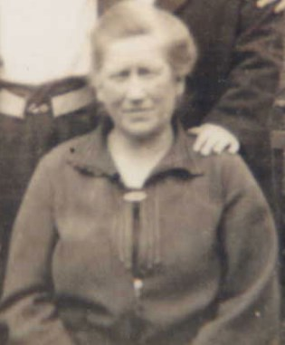

Frances Susannah Culmer cAug 1876 - 1955
[ Home ] | [ Calendar ] | [ Surnames Index ] | [ Census Index ] | [ Family History ]The child of Henry Culmer (a coal carman) and Eliza Arnold, Frances Culmer, the first cousin twice-removed on the mother's side of Nigel Horne, was born in Chartham, Kent, England c. Aug 18761,2 and baptized there on Aug 13, 1876. On Apr 5, 1891, she was living in Westmarsh, Kent, England1.
She died in 1955 in Bromley, Kent, England.
Parents
- Henry was born c. Nov 1851
- Eliza was born in 1849
Citations
- 1891 England, Wales & Scotland Census - Findmypast (was age 14 and the daughter of the head of the household)
- England & Wales births 1837-2006 - Findmypast
Media
Frances Susannah Culmer

England & Wales births 1837-2006 - BMD/B/1876/3/AZ/000131/143
Family Tree

Generated by ged2site. Last updated on Jun 11, 2024